Click anywhere to enter.
Fishy / ManyBlenny
I wish for Alias to reach new heights in the new year, allowing the booquets to support her in the same way she has supported us all this time.
It made me smile seeing Alias finally take to the ring personally. I'm still cheering her on from my seat.
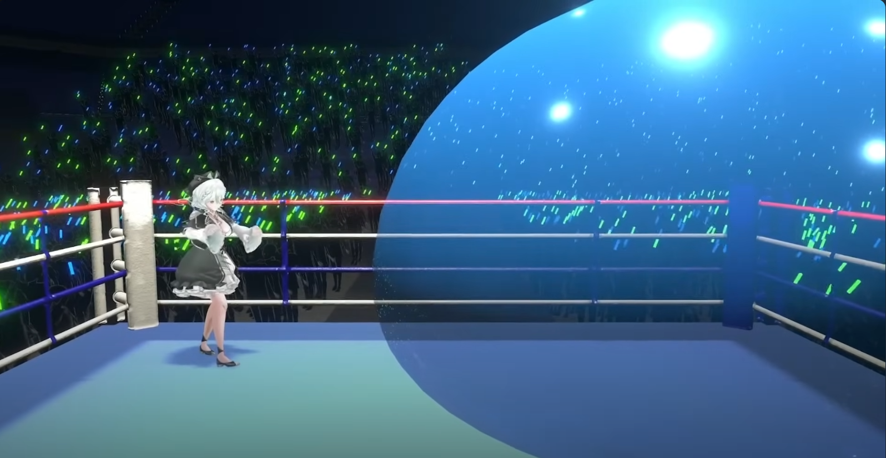TonytheTiger
나는 당신에게 세상의 모든 행복을 기원.
항상 건강하시고 잘 지내세.
나는 항상 네 곁에 있을게.
새해 복 많이 받아.
Alias 너무 사랑해
I promise to see
A precious memory of you that I will remember forever. I promise to be your date to the summer Festival every year and forever. This time there will be a ring on your finger. I love you Alias! Love love Love Love You!
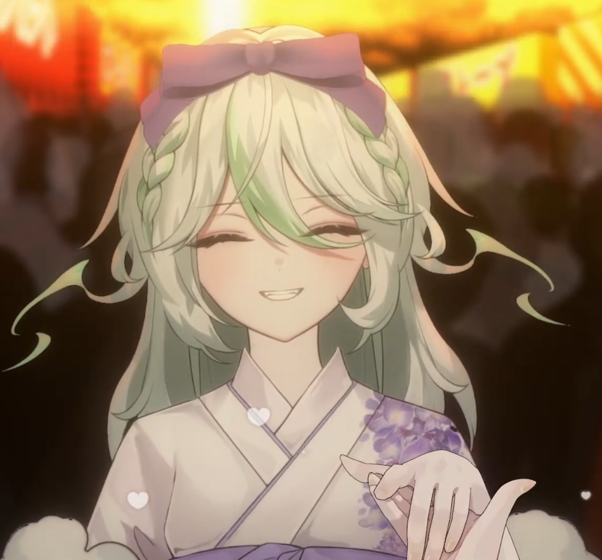JiroJuno
I hope that next year brings lots of energy and success to our beloved Alias and to the Booquets as well. If that doesn't happen... seeing Alias smile and hearing her laugh would be fantastic too.
This moment is from the Summer Serenade relay. Alias was first & she was very nervous, Booquets helped convinced her to sing one of her favorites, GO!!!, which she opened with & absolutely nailed.
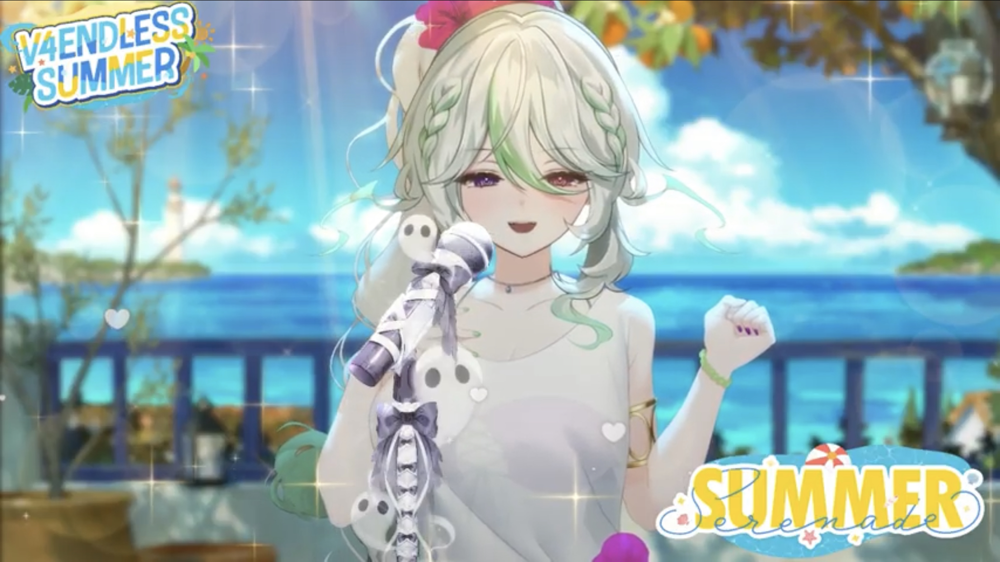HuKoJIaC
С Новым Годом, с новым счастьем! :3 Желаю помнить, что счастливая Элиас = счастливые Буукеты, поэтому постарайся не перетруждать себя, ладно сладенькая? С любовью и заботой - твой Буукет.
(Congratulations) With New Year, with new happiness! :3 I wish you to remember that happy Alias = happy Booquet's, so try to not overwork yourself, alright sweetie? With love and care - your Booquet.
Novalys
Bonne année Alias ! Merci pour tout ce que tu fais pour nous, tu es extraordinaire, tu débordes de talent et je suis heureux d'être un booquet. Je te souhaite le meilleur pour 2025 <3
Happy New Year Alias ! Thank you for everything you do for us, you're amazing, you're overflowing with talent and i'm happy to be a booquet. I wish you the best for 2025 <3
I discovered you with this video, i wasn't in a good health state at that time, it helped me a lot. I'm kind of a lurker, i rarely talk so i take this opportunity to thank you, you're the best Alias
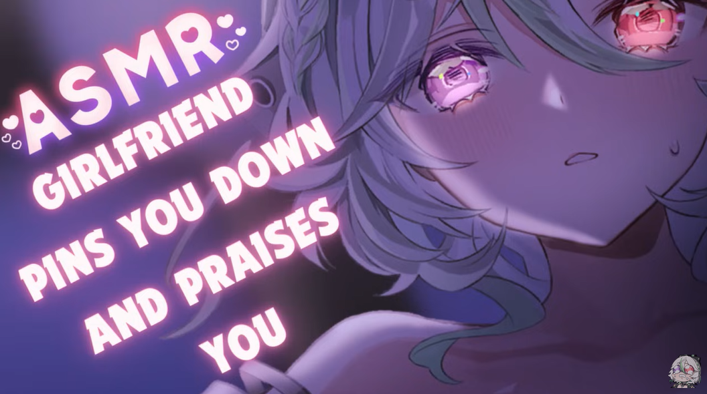snakeeatingmouse
Sé que harás realidad más sueños y espero que nos unamos aún más.
I know you will make more dreams come true and I hope that we grow even closer together.
Rayne
Alias, you have been a constant inspiration to me - How when trouble finds you, you forge a new path through it with sheer determination. I can't wait to see how far you can go in another year’s time.
The very first day I really SAW you. Jumping into your livestream for the first time, you instantly went from just another ASMRtist I listened to sometimes, to, “Wow! Alias is incredible!”
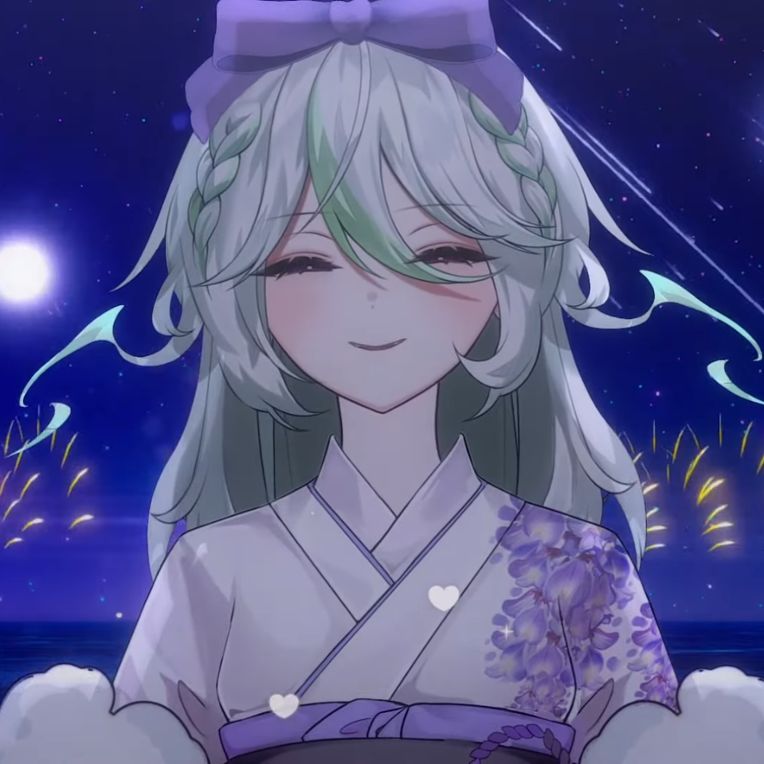Doomturkey
I wish for the coming year to be wonderful for Alias, booquets and the rest of V4. Alias, coming into my life has been such a positive change for me and you deserve the world.
It might be a weird choice, but Fanfic Friday 3 is special to me. It was the first stream I watched live. In a way it feels like the first time we met and when I started getting to know you, Alias
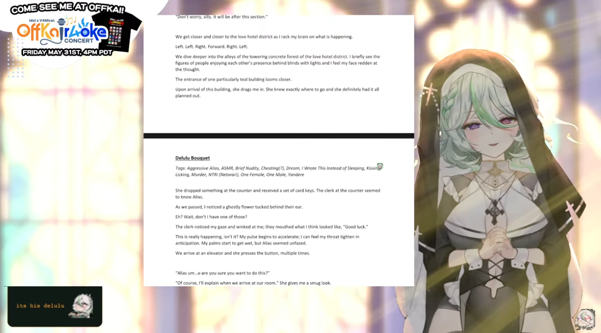Orange
Happy New Year, Alias! Meeting you has inspired me to try studying sound design at university! Seeing you pursue what you love made me want to do the same. I love you bunches, thanks for all you do!
Vampsquirrel
새해 복 많이 받으세요 Alias! Before I met you, I couldn't see the point of wishes, but now my life is full of them. Let's look forwards to this next year together, and all the joys awaiting us. 자기야 사랑해!
Hear me out! This isn't cyberbullying! It's the moment I saw how much effort you'd put in to fulfilling a silly little bet, and started to think I might have found something special.
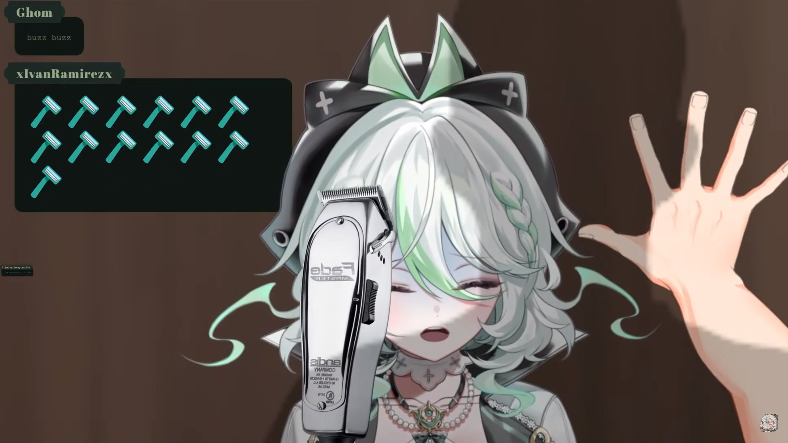Jerry
To A Happy New Years Together Alias. To The Many more Memories We Will Have Together. Through It All The Happy, Sad, Highs, And Lows. I Hope We Will Walk Together Hand In Hand. I Love You 자기야 Alias.
Its literally us
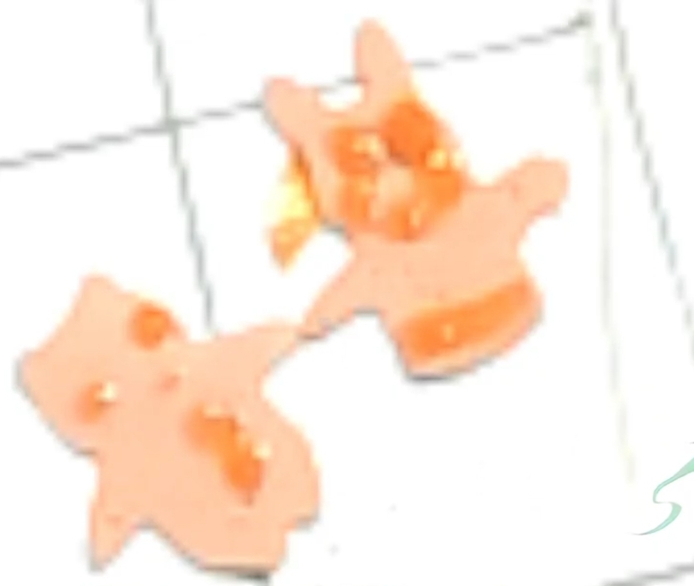Shylurker
Thank you for all of the hard work you've done this year. Every memory we've experienced has been precious treasures I will never forget. Can’t wait to spend the next year with you! 💚 Alias 너무 사랑해~
The Pillowtalk ASMR stream was my first livestream with you. Going through all the different positive affirmations made me realize I need to love myself. That day I decided to support you. Glad I did.
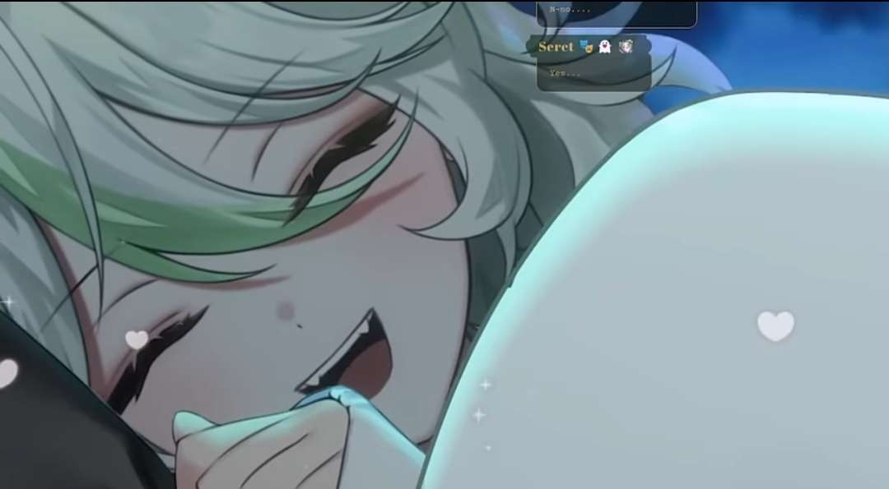Arima
Happy New Year's, Alias. I will keep my first wish a secret; I want it to come true. However, my second wish is to continue being by your side, hand in hand, facing whatever the future brings us.
The first screenshot I took. I was drunk, but in that moment, I realized how beautiful you are to me as a person. I can't stop this nervous feeling around you, but I cherish every memory. Love you.
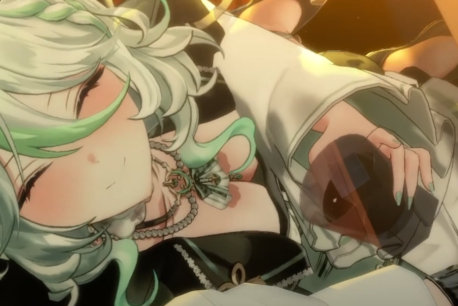Verasul
Gib mir Stärke, die Dinge zu ergreifen die ich benötige um die Welt einen besseren Ort zu machen. Für Alle, aber vorallem für die wunderbare Frau, die mich jeden Tag auf's Neue glücklich macht.
Give me strength to seize the things that I need to make the world a better place. For everyone, but especially for the wonderful woman who makes me happy each and every day.
These last few years haven't been kind to me. I've begun to heavily rely on ASMR to help me sleep. Then, I found you - and my nights have been restful ever since. Thank you for saving me. I love you.
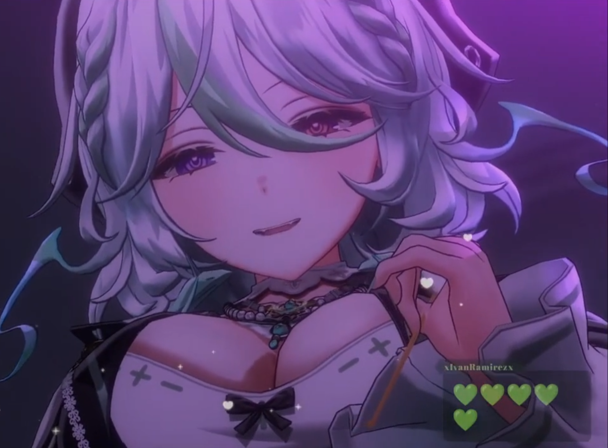Seret
새해 복 많이 받아! I hope that I did the right one. Happy New Year Alias. Lets end this year with the bang! Thank You for the most wonderful time of my life, can’t wait to experience rest of it by Your side.
Seeing how happy we can make You with our acts of love is what pushes me forward. I want to keep doing my best, making sure that You will always have a reason to smile. 사랑해. 너무 사랑해.
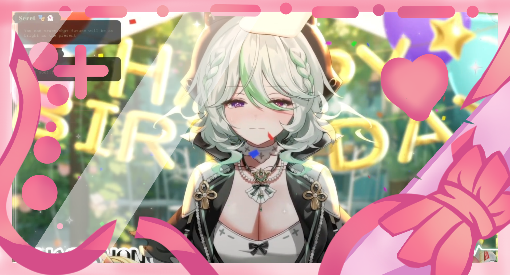Yuririn
May this new year be filled with more special moments together and lovely memories. I wish that this next year is kinder to you and that this new chapter brings good experiences. 자기야 너무 사랑해! 난 네 생각뿐이야
Discovering new sounds together is always a wonderful experience. Seeing you excited and happy about it fills my heart with joy. Test triggers streams can be really cute and yield interesting results.
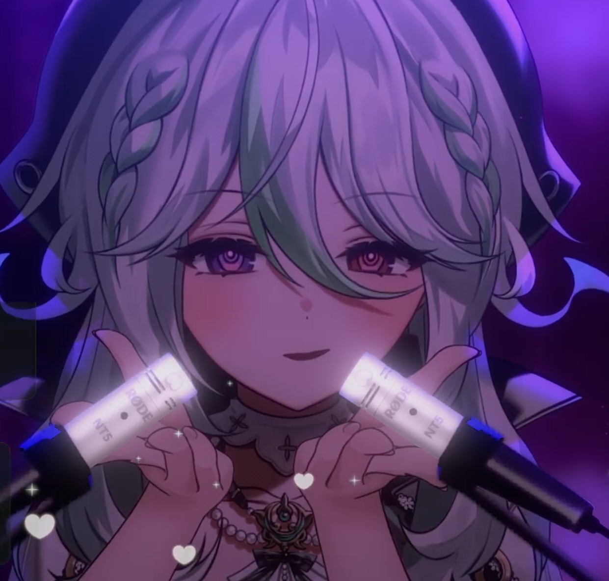Shield
My wish is that I don't let this go. I want to stay in this community, and all of V4. It's been really positive on me, even if it's only been a short amount of time, but I want to keep it.
ErresID
Before the fireworks lights up to the sky, and the new year's eve countdown started, Happy new year 2025 and i wish for the new year's journey awaits us will be the greatest moments that you'll never forget. Alias Love!
The moment where Alias surprised by those booquets's donation
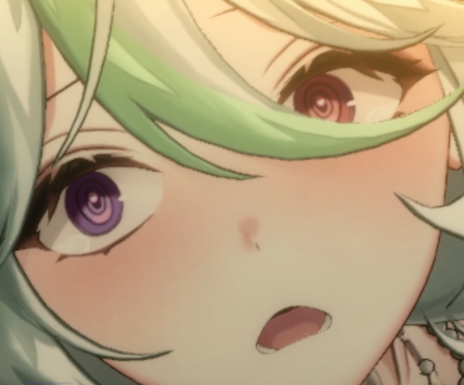Entry Hazard
자기야 새해 복 많이 받아! It's been a wonderful year of memories had and promises made. I cannot wait to spend this start of forever with you, and see all of what our future holds. 내 사랑 너는 내 햇살이야. 하늘만큼 당만큼 사랑해!
There's this feeling that fills the air whenever we're moments away from meeting like this. Somewhere between excitement, nervousness and admiration. It's a feeling I wouldn't trade for the world.
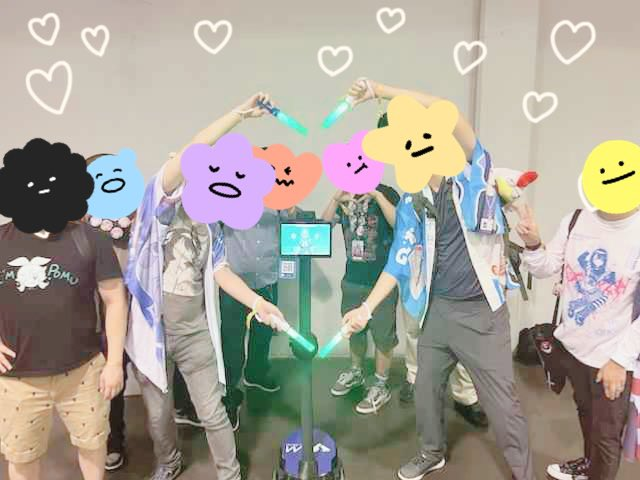AnOminous Anonymous
缘分很奇怪。有时候，最亲近的来自最远的距离。
しかし運命は常に私たちを導く。
May there be many more memories to make.
그리고 앞으로도 더 행복한 세월을 보내자。
Thank you, 谢谢，愛している，사랑해요。
Booquet: ALIAS LOVE!! 💚💚💚
Alias: BOOQUET LOVE!! 💚💚💚
Jokes aside, the first 2 lines read similarly as such:
Fate often works in mysterious ways. Sometimes the ones closest to us are those whom we are furthest apart from.
Pocky- I mean Pepero :3
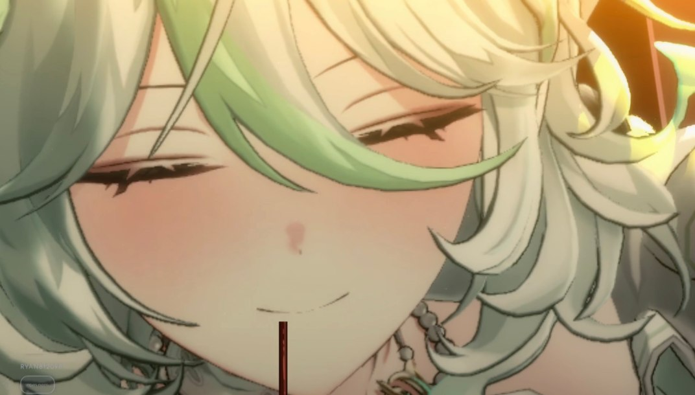Lyu
새해 복 많이 받으세요, 자기야!
Thank you for the cherished memories this year. My wish for the year ahead is that you walk a path of happiness, and that we journey together on it, hand-in-hand.
항상 네 곁에 있을게, 사랑해.
Whenever you shared the bad news during summer, and still stayed brave with a smile, it stayed in my heart. How could I not love someone so warm and brave? How could I not always want her to smile?
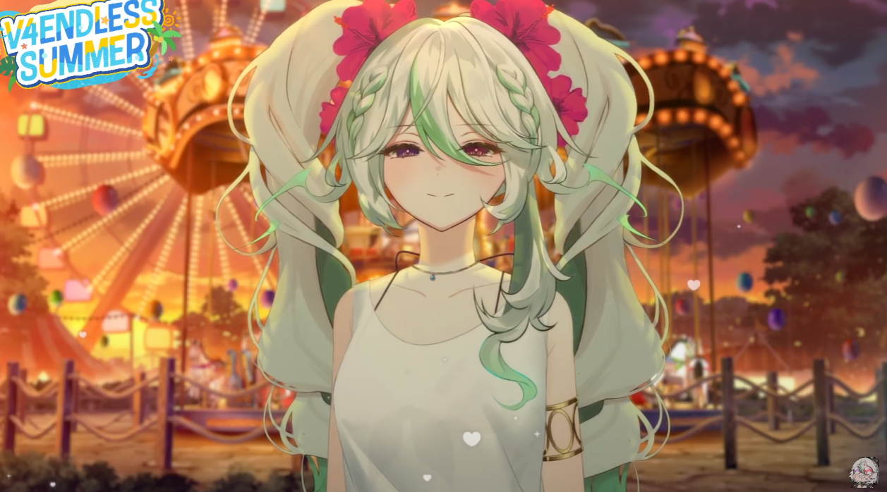DarkEcoFreak
Alias I wish to walk into the new year side by side, hand in hand. There is no one I'd rather be with and I look forward to everything that the new year has in store for us. I love you dearly.
This stream is when I knew you had my heart, I had only recently been watching. But being engrossed to the point I was sharing tears watching I knew there wasn't anywhere else I belonged, I love you
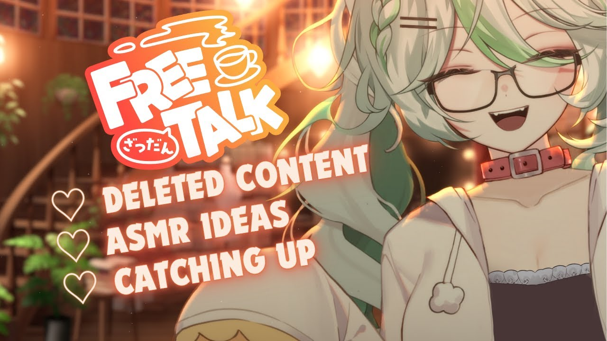Sam
I wish that you always know that no matter what happens, there are booquets around the world ready to listen to you, support you and show you their love to you
I love seeing when your hard work pays off
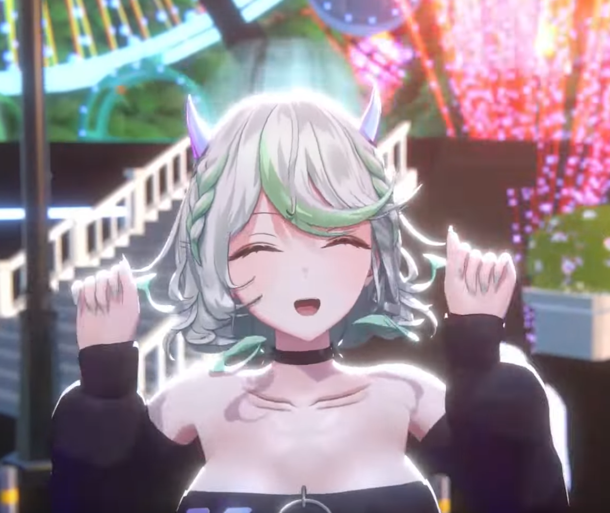Pun
I wish for Alias to be happy and healthy for many years to come. May her ASMR content and story writing continue to be world-class examples of how to interact with one's fanbase. All the best to my dear wife!
Alias when Booquets fail the "Try not to Dono-train the Wife" Challenge (Impossible).
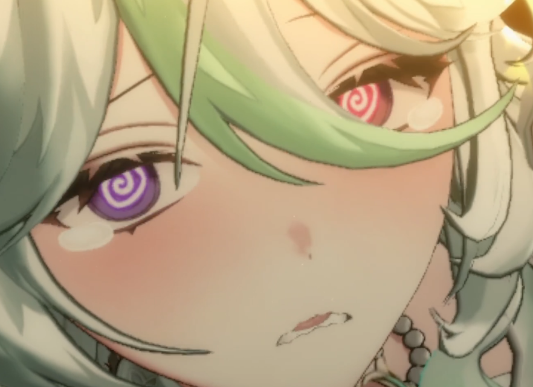